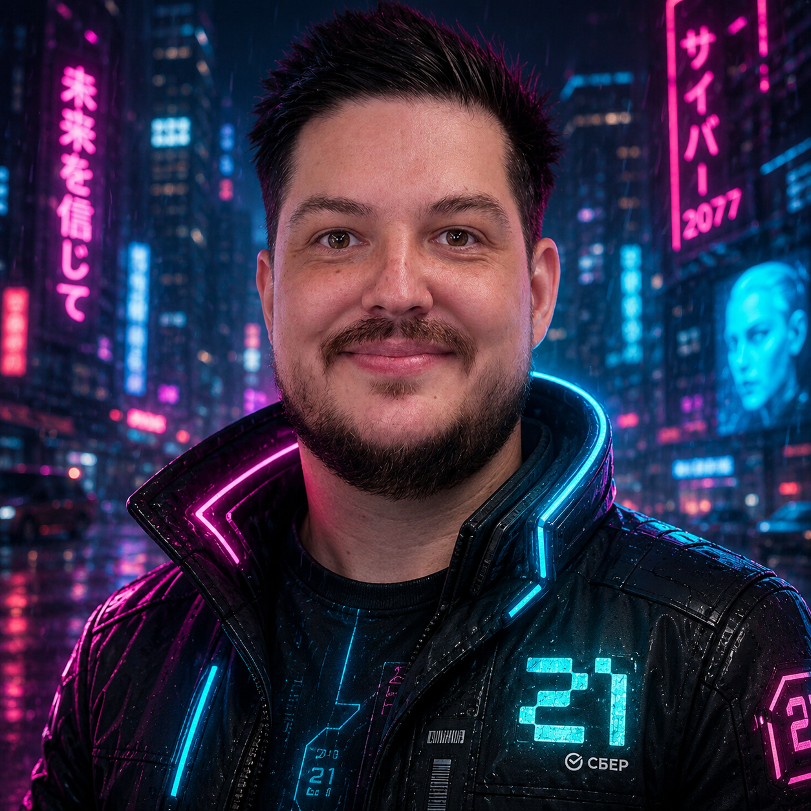

Slash-протокол: пять /команд, четыре фазы, один evidence bundle. Как мы реально работаем с агентом в репозитории.
Как мы реально работаем с агентом в репозитории: пять /команд, четыре фазы, один evidence bundle. Модель пишет код, обвязка решает, что считать «готово».
98,4% кодовой базы Claude Code — детерминированная инфраструктура. И лишь ~1,6% — собственно логика ИИ.
Инженерная ценность сосредоточена в обвязке: проверка прав, контекст, маршрутизация инструментов, аудит-лог, hooks. Поменяйте модель — обвязка останется. Уберите обвязку — любая модель уедет в кювет.
Договорённости и стиль. Агент будет их соблюдать, но не всегда — это инструкция, не закон.
Один шаг работы — одна /команда. Меньше зависимости от того, как сформулирован промпт.
Запреты, которые работают всегда: rm -rf, push --force, чтение секретов. Это код, а не просьба.
Сначала пишем, что и зачем делаем. В конце — собираем доказательства, что сделали именно это.
У каждой команды один вход, один выход и понятная зона ответственности. Не «попроси агента сделать всё хорошо», а конкретный шаг с конкретным артефактом.
Заводит SDD по шаблону и задаёт человеку нужные вопросы. Пока документ не approved — к коду не переходим.
Считает класс риска по четырём осям, чтобы R1 не уходил на согласование как R4 и наоборот.
Read-only: какие файлы трону, в каком порядке, где риски. Правок ноль.
Отдельный агент без прав на запись смотрит diff глазами ревьюера: соответствует ли код SDD.
Финальный пакет: diff, тесты, lint, сканы, оставшиеся допущения. Без него задача не закрывается.
Подключаемые навыки: brainstorm, TDD, debugging. Берём по ситуации, а не всё сразу.
Порядок жёсткий: думаем → фиксируем тестом → пишем код → собираем подтверждения. Перепрыгивать шаги нельзя даже для «маленькой задачки».
Читаем SDD, выписываем допущения, договариваемся о подходе. Здесь дёшево менять решение — потом будет дороже.
Пишем падающие тесты раньше кода. Тест — это критерий «готово»; если его можно подогнать, никакой это не критерий.
Минимум кода, чтобы тесты позеленели. Хочется поправить тест — это сигнал вернуться на шаг назад, а не «оптимизировать».
Собираем diff, прогоны тестов, lint, security scan и список нерешённых вопросов. Нет пакета — нет «сделано».
Чем выше класс, тем меньше агент решает сам. На R0 — без участия. На R4–R5 — ничего, пока человек не подтвердит.
Колеблешься между двумя классами — берёшь выше. Approval fatigue → не тратим серьёзное внимание на несерьёзные вещи.
Команда создаёт Software Design Document из шаблона и сразу спрашивает у человека: класс риска, критерии приёмки, кого назначить SME-ревьюером. Пока SDD не approved — к коду не переходим.
Класс вычисляется по четырём осям, а не «ощущается». Это убирает спор о том, нужен ли security review: либо данные и радиус говорят «да», либо нет.
public · internal · pii · secret · regulated
dev · staging · prod
local · service · multi-service · platform
reversible · partial · irreversible
PII × prod × irreversible = R4, без вариантов. Formatting × dev = R0, без вариантов. Уставший в пятницу человек занижает риск — алгоритм не различает «маленькую правку», он различает данные, стадию, радиус и обратимость.
Режим разведки. Агент только читает: код, тесты, SDD. Никаких Edit/Write, никаких «по ходу дела поправлю». На выходе — план, который можно обсудить и поменять, пока это дёшево.
Главная ошибка агентов — one-shot failure: попытка сделать всю задачу за один проход, не разобравшись. /plan ломает этот паттерн.
У него только Read · Grep · Test. Его задача — посмотреть на diff чужими глазами и проверить, делает ли код именно то, что обещал SDD. Не подправить, а вынести вердикт.
· все AC покрыты тестами
· property-based invariants проверяются
· нет реализации вне scope
· negative cases учтены
· naming = CLAUDE.md
· нет over-engineering
· error handling консистентен
· edge cases закрыты
· deprecated APIs (MD5 для паролей)
· over-permission в IAM
· hallucinated dependencies
· secrets · injection · auth bypass
· supply chain
· OWASP top 10
Gartner: AI-код пишется на 35% быстрее, но без ревью содержит на 25% больше уязвимостей. Ускорение без ревью — это технический долг с процентами.
Когда агент пытается сказать «всё, готово», срабатывает stop-hook: он проверяет evidence bundle по JSON-схеме. Не сошлась схема — задача остаётся in_progress.
Premature victory — характерный сбой агентов: «готово» после частичного прогресса. За него помнит обвязка, не агент.
files_changed, +/- lines, summary
passed / failed / skipped + duration
warnings, errors
SAST: semgrep / bandit / npm audit · High+Critical
unresolved + open risks
risk class · SDD ref · AC status
На каждом шаге свой агент со своим набором прав. Explore только читает. Coding пишет — но строго в worktree и не трогает тесты. Review снова без записи.
Главное правило: дочерний агент не может получить прав больше, чем у родителя. Subagents — это в первую очередь стенка между ответственностями, не «много агентов умнее одного».
Ходит по репозиторию и возвращает короткую сводку: где живёт нужный код, какие у него зависимости.
Из сводки и SDD собирает план: что трогаем, в каком порядке, где видим риски. Файлы не правит.
Пишет тесты, которые сейчас падают, и фиксирует поведение, которого мы хотим добиться.
Доводит тесты до зелёного. Работает в worktree, тестовый файл не трогает в принципе.
Без прав на запись. Возвращает findings с уровнями: blocker, major, nit.
SAST-сканеры и проверка зависимостей. На R3 и выше вызывается автоматически.
Это не риторика и не «у нас в команде ощущается так». Есть три категории данных, и все они смотрят в одну сторону: harness ускоряет, его отсутствие — замедляет и плодит долг.
AI-код пишется быстрее, но +25% уязвимостей, +40,7% сложности кода (807 репозиториев), 25% AI-issues остаются в latest revision (304k коммитов).
Gartner · he2026cursor · liu2026techdebt
Прогноз Gartner на 2027: организации без формальной спецификации теряют четверть скорости разработки. Не «±0», а прямой минус — потому что переделки съедают экономию на старте.
Gartner Forecast 2027
66% компаний с ≥ 10 AI-сценариями в SDLC сообщают о росте скорости — против только 35% при менее чем 5 сценариях. Отдача от harness нелинейная.
Gartner · DORA 2025
RCT Anthropic 2026: группа разработчиков с ИИ без harness набрала на 17% ниже на тесте инженерного мастерства — наибольший разрыв в задачах отладки. McKinsey Digital: лидеры Developer Velocity Index растут по выручке в 4–5 раз быстрее аутсайдеров. Источники: см. source/AI_DISRUPT_PDLC_v3.5.md, §1.1–1.3, библиография §10.
Откройте Claude Code в репозитории и наберите первую команду. SDD, риск, план, тесты, код, ревью, evidence — процесс не нужно держать в голове. Он живёт в командах.